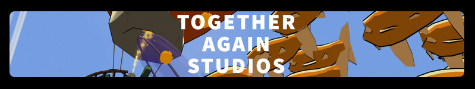
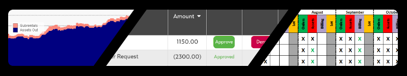
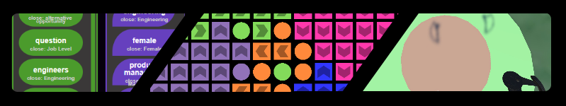

Brian Hockenmaier

Brian Hockenmaier is an engineer, product leader, and tech enthusiast. His experience includes virtual and augmented reality development, analytics, game development, cloud-native web development, and natural language processing.
He currently leads IP Rights Engineering at NCBUniversal and runs Together Again Studios, a VR/AR studio.
Welcome! This site is a portfolio of most of the work I own, and a few select projects I can share from my past roles in the enterprise.

Lately, my work outside of NBCUniversal has been in VR and AR. I launched a studio that I named "Together Again Studios"
to demonstrate my focus on creating good social experiences in the emerging realm of spacial computing

NBCUniversal Projects
I've spent most of my professional career driving a large company towards iterative software projects using small, focused and dedicated engineering teams.
I'm a huge proponent of using devops automation, cloud and serverless technologies to reduce development friction and frustration

Solo Projects
At home, I try to practice what I preach and build with an aggressive "minimum viable product" strategy, in technology domains that are sometimes too new
or unproven for large enterprises to be pursuing quite yet. Here is a collection of work I've done outside of Together Again Studios and NBCUniversal
I've learned that demonstrated skills are far more important than credentials in my personal development and hiring, so this website is focused on real products and teams I've built and led.
Other Links:
Most of my development projects are stored on public or private repos on my github
I post mostly about my VR work on my twitter
A collection of physical projects and 3D designs can be found on my thingiverse
And my professional persona can be found on my linkedin